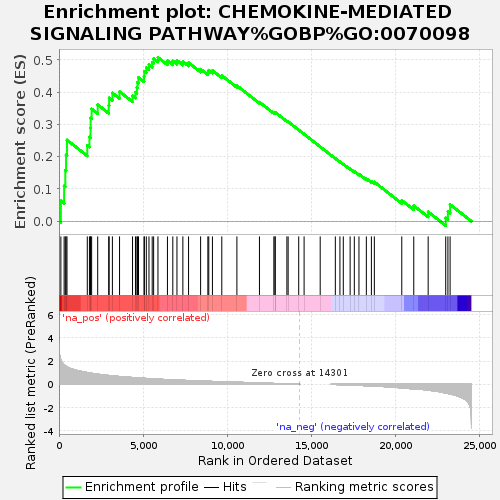
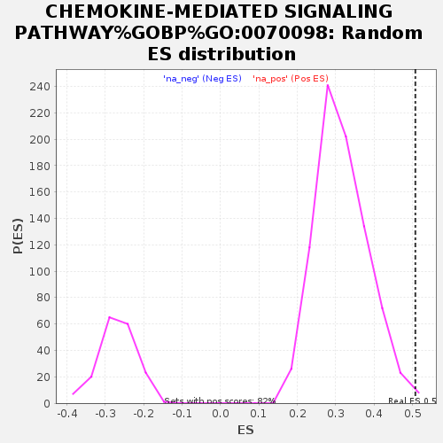

| Dataset | GvHD_A2_Ranks |
| Phenotype | NoPhenotypeAvailable |
| Upregulated in class | na_pos |
| GeneSet | CHEMOKINE-MEDIATED SIGNALING PATHWAY%GOBP%GO:0070098 |
| Enrichment Score (ES) | 0.5075894 |
| Normalized Enrichment Score (NES) | 1.603951 |
| Nominal p-value | 0.004854369 |
| FDR q-value | 1.0 |
| FWER p-Value | 1.0 |

| SYMBOL | RANK IN GENE LIST | RANK METRIC SCORE | RUNNING ES | CORE ENRICHMENT | |
|---|---|---|---|---|---|
| 1 | CCR1 | 111 | 2.102 | 0.0632 | Yes |
| 2 | THPO | 304 | 1.684 | 0.1095 | Yes |
| 3 | ACKR3 | 375 | 1.589 | 0.1579 | Yes |
| 4 | CCL1 | 420 | 1.542 | 0.2057 | Yes |
| 5 | CCR2 | 474 | 1.497 | 0.2518 | Yes |
| 6 | GPR75 | 1680 | 1.007 | 0.2349 | Yes |
| 7 | XCL1 | 1808 | 0.974 | 0.2611 | Yes |
| 8 | WNK1 | 1874 | 0.957 | 0.2892 | Yes |
| 9 | STK39 | 1880 | 0.957 | 0.3199 | Yes |
| 10 | CXCL12 | 1938 | 0.943 | 0.3479 | Yes |
| 11 | TTC1 | 2298 | 0.867 | 0.3611 | Yes |
| 12 | CCL19 | 2953 | 0.758 | 0.3588 | Yes |
| 13 | CCL24 | 2976 | 0.754 | 0.3821 | Yes |
| 14 | MAPK1 | 3171 | 0.725 | 0.3976 | Yes |
| 15 | XCL2 | 3596 | 0.665 | 0.4016 | Yes |
| 16 | GNAI1 | 4367 | 0.582 | 0.3889 | Yes |
| 17 | CCL5 | 4541 | 0.561 | 0.3999 | Yes |
| 18 | CCL26 | 4627 | 0.552 | 0.4142 | Yes |
| 19 | CIB1 | 4659 | 0.549 | 0.4306 | Yes |
| 20 | CXCL11 | 4721 | 0.544 | 0.4456 | Yes |
| 21 | CCL25 | 5051 | 0.513 | 0.4487 | Yes |
| 22 | CCL4L2 | 5069 | 0.511 | 0.4645 | Yes |
| 23 | CCL4 | 5186 | 0.502 | 0.4759 | Yes |
| 24 | CCL15 | 5343 | 0.487 | 0.4852 | Yes |
| 25 | FOXC1 | 5535 | 0.469 | 0.4925 | Yes |
| 26 | CXCL9 | 5620 | 0.461 | 0.5038 | Yes |
| 27 | GPR35 | 5877 | 0.441 | 0.5076 | Yes |
| 28 | CXCL10 | 6440 | 0.399 | 0.4974 | No |
| 29 | MRGPRX2 | 6759 | 0.379 | 0.4966 | No |
| 30 | ENTREP1 | 7005 | 0.361 | 0.4982 | No |
| 31 | CCL14 | 7356 | 0.342 | 0.4949 | No |
| 32 | CCL21 | 7694 | 0.320 | 0.4914 | No |
| 33 | LYN | 8410 | 0.282 | 0.4712 | No |
| 34 | JAK2 | 8841 | 0.258 | 0.4619 | No |
| 35 | CCL2 | 8895 | 0.254 | 0.4680 | No |
| 36 | CCR3 | 9112 | 0.244 | 0.4670 | No |
| 37 | CCL22 | 9668 | 0.220 | 0.4513 | No |
| 38 | CCL11 | 10565 | 0.171 | 0.4202 | No |
| 39 | CCL23 | 11905 | 0.111 | 0.3690 | No |
| 40 | CCR7 | 12760 | 0.074 | 0.3364 | No |
| 41 | ARRB2 | 12833 | 0.070 | 0.3357 | No |
| 42 | MPL | 12835 | 0.070 | 0.3379 | No |
| 43 | CCL13 | 13534 | 0.036 | 0.3105 | No |
| 44 | CCL3 | 13608 | 0.033 | 0.3085 | No |
| 45 | CX3CL1 | 14236 | 0.003 | 0.2830 | No |
| 46 | CXCL17 | 14556 | 0.000 | 0.2699 | No |
| 47 | MAS1 | 15512 | 0.000 | 0.2308 | No |
| 48 | TREM2 | 16411 | -0.013 | 0.1945 | No |
| 49 | GPR25 | 16684 | -0.024 | 0.1841 | No |
| 50 | CXCR4 | 16884 | -0.034 | 0.1771 | No |
| 51 | WBP1L | 17290 | -0.057 | 0.1623 | No |
| 52 | OXSR1 | 17539 | -0.070 | 0.1544 | No |
| 53 | TFF2 | 17814 | -0.087 | 0.1460 | No |
| 54 | SH2B3 | 18253 | -0.116 | 0.1318 | No |
| 55 | CCL16 | 18553 | -0.138 | 0.1240 | No |
| 56 | CXCL13 | 18728 | -0.148 | 0.1217 | No |
| 57 | STAT5A | 20357 | -0.299 | 0.0647 | No |
| 58 | CCL18 | 21069 | -0.392 | 0.0482 | No |
| 59 | CCL7 | 21924 | -0.495 | 0.0292 | No |
| 60 | CCL8 | 22967 | -0.742 | 0.0105 | No |
| 61 | PTK2B | 23097 | -0.782 | 0.0304 | No |
| 62 | RBM15 | 23227 | -0.828 | 0.0517 | No |
